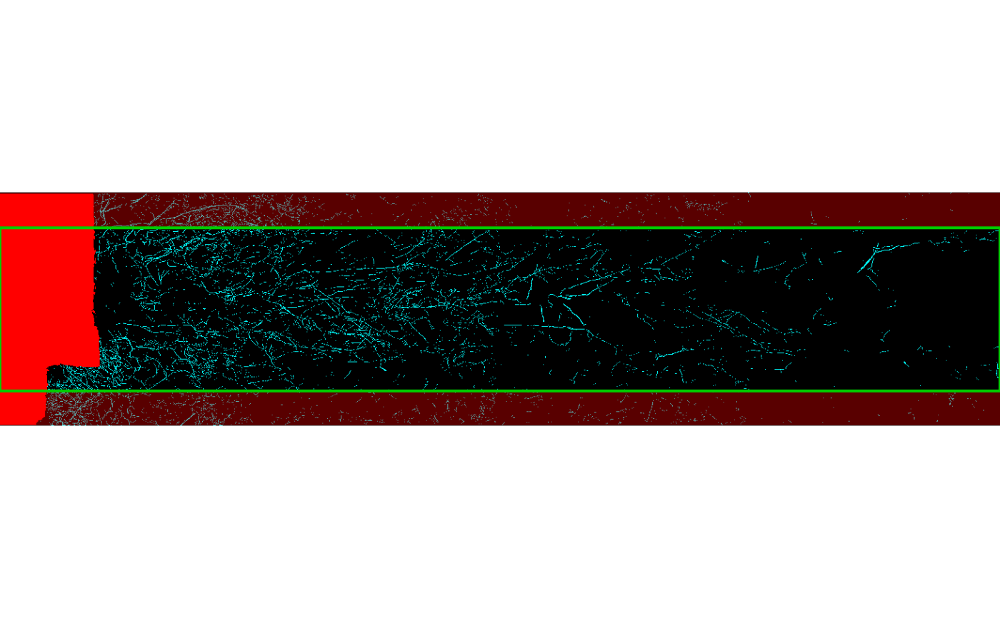

Crops the rotation axis (rows) of a root scan. In fixed mode it returns a
fixed-width window centered on a given row (e.g. the rotation center from
estimate_rotation_center()); in variable mode it trims a band sized by
a measured offset. Optionally previews what is kept versus cut.
Usage
rotation_censor(
img,
center_offset = 0,
cut_buffer = 0.02,
fixed_rotation = TRUE,
fixed_width = 500,
select_layer = NULL,
overlay = FALSE,
...
)Arguments
- img
Input image as raster, file name, or array.
- center_offset
Numeric or character. Where to center the kept window (in fixed mode), given in one of three forms:
Absolute row - a number
> 1: the exact row to center on (e.g. fromestimate_rotation_center()).Fraction - a number in
[0, 1]: a fraction of the image height.0= top,0.25= a quarter down,0.5= middle,1= bottom (so the center row iscenter_offset * nrow).Keyword -
"top"(= 0),"middle"/"center"/"center"(= 0.5), or"bottom"(= 1).
The default
0centers on the top row. Whenfixed_rotation = FALSEthe resolved value is used as the rotation shift in rows to trim (e.g. fromestimate_rotation_shift()); pass an absolute number there.- cut_buffer
Extra proportion of the rotation axis to trim (variable mode).
- fixed_rotation
Logical. If
TRUE, return a fixed-width window.- fixed_width
Output width in rows when
fixed_rotation = TRUE.- select_layer
Integer or
NULL. Layer to use for multi-band inputs.- overlay
Logical. If
TRUE, plot the full image with the kept window (green outline) and discarded margins (red shading) before cropping. DefaultFALSE.- ...
Passed to the underlying
terraplotting call whenoverlay = TRUE.
Value
A cropped SpatRaster (returned invisibly when
overlay = TRUE), or NULL if the result is empty.
Examples
data(seg_Oulanka2023_Session01_T067)
img <- terra::rast(seg_Oulanka2023_Session01_T067)
r0 <- estimate_rotation_center(img)
rotation_censor(img, center_offset = r0, fixed_width = 800,
fixed_rotation = TRUE, overlay = TRUE)

# Same window centered on the middle of the image, via a fraction or keyword
rotation_censor(img, center_offset = 0.5, fixed_width = 800)
#> class : SpatRaster
#> size : 800, 4900, 3 (nrow, ncol, nlyr)
#> resolution : 1, 1 (x, y)
#> extent : 0, 4900, 0, 800 (xmin, xmax, ymin, ymax)
#> coord. ref. :
#> source(s) : memory
#> names : lyr.1, lyr.2, lyr.3
#> min values : 0, 0, 0
#> max values : 255, 255, 255
rotation_censor(img, center_offset = "middle", fixed_width = 800)
#> class : SpatRaster
#> size : 800, 4900, 3 (nrow, ncol, nlyr)
#> resolution : 1, 1 (x, y)
#> extent : 0, 4900, 0, 800 (xmin, xmax, ymin, ymax)
#> coord. ref. :
#> source(s) : memory
#> names : lyr.1, lyr.2, lyr.3
#> min values : 0, 0, 0
#> max values : 255, 255, 255
# Top of the tube a quarter of the way down
rotation_censor(img, center_offset = 0.25, fixed_width = 800)
#> fixed_width = 800 cannot be centered symmetrically on row 286 (image is 1144 rows). Max symmetric width here is 570 px; clamping to image bounds.
#> class : SpatRaster
#> size : 685, 4900, 3 (nrow, ncol, nlyr)
#> resolution : 1, 1 (x, y)
#> extent : 0, 4900, 0, 685 (xmin, xmax, ymin, ymax)
#> coord. ref. :
#> source(s) : memory
#> names : lyr.1, lyr.2, lyr.3
#> min values : 0, 0, 0
#> max values : 255, 255, 255